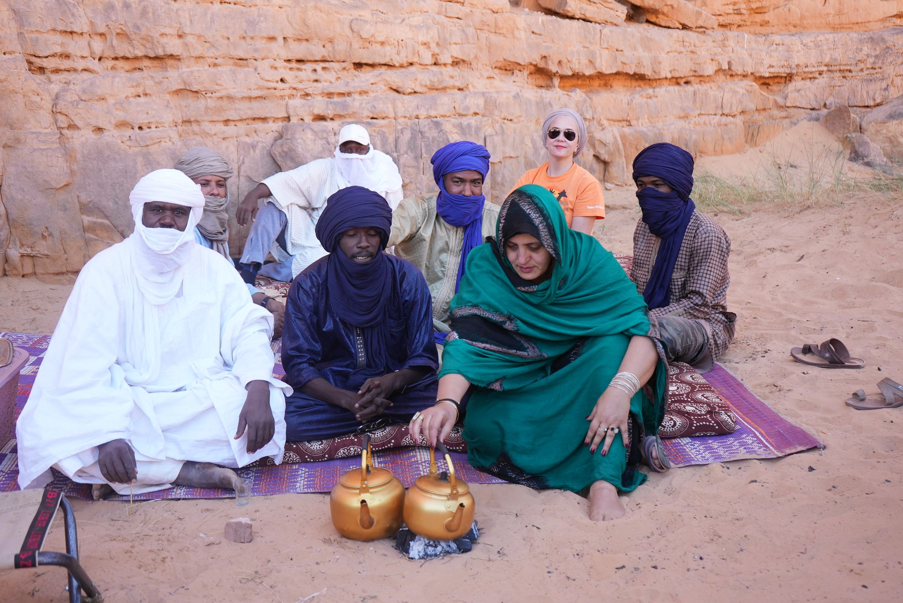
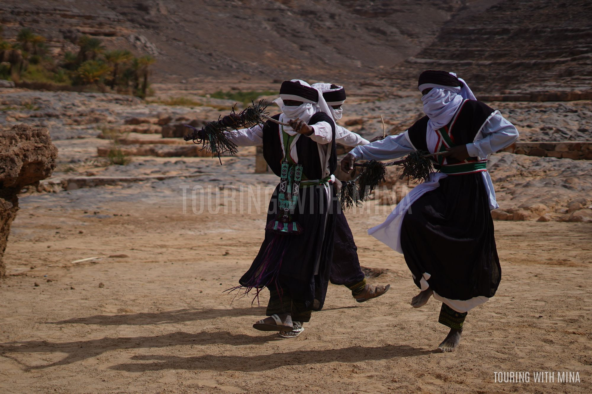

Passionnés de Djanet
Nous sommes des passionnés de la beauté incomparable et de la richesse culturelle de Djanet, et nous nous consacrons à partager ses merveilles avec le monde entier.

Le voyage
Nous vous guidons au cœur du Sahara algérien. Nos services sur mesure vous offrent la possibilité d'explorer des paysages à couper le souffle, de vous immerger dans une culture riche et de créer des souvenirs qui dureront toute votre vie.

L'équipe touarègue
Nos amis touaregs vous accueillent dès l'aéroport. Guides, chauffeurs et cuisiniers vous font découvrir l'histoire, la culture et les merveilles naturelles de la région, et partagent avec vous la cuisine authentique du Sahara.

Le désert, en vrai
Expédition en 4x4, randonnées, peintures et gravures rupestres, nuits à la belle étoile sous des tentes confortables : nos aventures vous promettent à la fois l'exaltation et la sérénité.
Pourquoi nous choisir
Nous vous répondons en français, en anglais et en arabe.
Passion pour Djanet
Nous sommes des passionnés de la beauté et de la richesse culturelle de Djanet, et nous partageons ses merveilles avec le monde entier.
Attention personnalisée
Votre confort, votre sécurité et votre satisfaction sont nos priorités tout au long du voyage.
Tourisme durable
Nous voyageons de façon responsable : respect de l'environnement, soutien aux communautés locales et préservation du patrimoine de Djanet.
Expériences sur mesure
Votre voyage sera unique, à votre image, avec un itinéraire adapté à vos préférences et à votre rythme.
Comment se prépare votre voyage
Quatre étapes, un seul interlocuteur.
- 1
Vous nous écrivez
Par le formulaire, WhatsApp ou e-mail : vos dates, votre groupe, vos envies.
- 2
Mina vous répond
Sous 24 heures, avec un programme adapté et un devis clair.
- 3
Nous préparons tout
Dossier de visa, transferts, équipe, véhicules et matériel de bivouac.
- 4
Accueil à Djanet
L'équipe vous attend à l'aéroport. Le voyage commence dès la sortie de l'avion.
Votre voyage à Djanet commence par un message
Dites-nous vos dates et vos envies. Mina vous répond personnellement sous 24 heures.